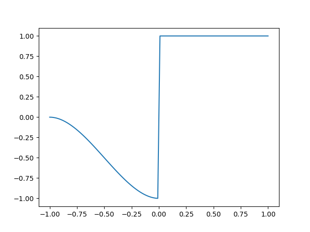

Note
Go to the end to download the full example code
3c. Defining the fault displacement function#
import numpy as np
import pandas as pd
import LoopStructural as LS
# Define a dataset for a fault
origin = [0, 0, 0]
extent = [10, 10, 10]
data = pd.DataFrame(
[
[5, 5, 5, 0, 0.70710678, 0.0, 0.70710678, 0, "fault"],
[5, 5, 5, 0, -0.70710678, 0.0, 0.70710678, 1, "fault"],
[8, 5, 5, 0, 0, 0, 1, np.nan, "strati"],
],
columns=["X", "Y", "Z", "val", "nx", "ny", "nz", "coord", "feature_name"],
)
data
Create model using the standard fault displacement model
model = LS.GeologicalModel(origin, extent)
model.data = data
model.create_and_add_fault(
"fault",
1,
nelements=1000,
interpolator_type="PLI",
buffer=0.5,
major_axis=10,
minor_axis=3,
intermediate_axis=10,
)
model.create_and_add_foliation(
"strati", nelements=1000, interpolator_type="PLI", faults=[model["fault"]]
)
import LoopStructural.visualisation as vis
view = vis.LavaVuModelViewer(model)
view.add_isosurface(model.features[0], slices=[0])
view.add_isosurface(model.features[1], nslices=5, paint_with=model.features[1])
# view.add_vector_field(model["fault"][1], locations=model.regular_grid()[::100])
view.camera = {
'translate': [0.0, 0.0, -17.321],
'rotate': [-0.703, -0.055, -0.043, 0.708],
'xyzrotate': [-89.604, -8.007, 0.933],
'fov': 45.0,
}
view.display()
adding fault trace anisotropy
adding fault dip anisotropy fault_dip_anisotropy
lv.translation(0.0, 0.0, -17.321)
lv.rotation(-89.604, -8.007, 0.933)
Define a fault displacement profile which is a drag fault only on the footwall side. In LoopStructural the displacement is defined by a function of the three coordinates of the fault frame. The fault profile in the fault surface field
model['fault'].faultfunction.gx.plot()
The fault profile in the fault extent
model['fault'].faultfunction.gy.plot()
The fault profile down dip is kept constant. We will modify this profile so that the hanging wall is displaced by a constant value
from LoopStructural.modelling.features.fault._fault_function import (
FaultDisplacement,
CubicFunction,
Ones,
)
fw = CubicFunction()
fw.add_cstr(0, -1)
fw.add_grad(0, 0)
fw.add_cstr(-1, 0)
fw.add_grad(-1, 0)
fw.add_min(-1)
hw = Ones()
drag_fault = FaultDisplacement(hw=hw, fw=fw)
drag_fault.gx.plot()
drag_fault.gy.plot()
drag_fault.gz.plot()
model = LS.GeologicalModel(origin, extent)
model.data = data
model.create_and_add_fault(
"fault",
-1,
nelements=1000,
interpolator_type="PLI",
buffer=0.5,
major_axis=10,
minor_axis=6,
intermediate_axis=10,
faultfunction=drag_fault,
)
model.create_and_add_foliation(
"strati", nelements=1000, interpolator_type="PLI", faults=[model["fault"]]
)
view = vis.LavaVuModelViewer(model)
view.nelements = 1e5
view.add_isosurface(model.features[0], slices=[0])
view.add_isosurface(model['strati'], nslices=5)
# view.add_scalar_field(model['strati'], cmap='tab20')
# view.add_vector_field(model["fault"][1], locations=model.regular_grid()[::100])
view.camera = {
'translate': [0.0, 0.0, -17.321],
'rotate': [-0.703, -0.055, -0.043, 0.708],
'xyzrotate': [-89.604, -8.007, 0.933],
'fov': 45.0,
}
view.display()
- 
Gy function none setting to ones
Gz function none setting to ones
adding fault trace anisotropy
adding fault dip anisotropy fault_dip_anisotropy
lv.translation(0.0, 0.0, -17.321)
lv.rotation(-89.604, -8.007, 0.933)
Total running time of the script: (0 minutes 7.046 seconds)